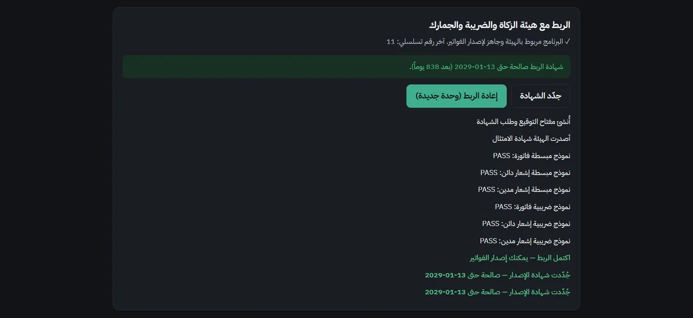
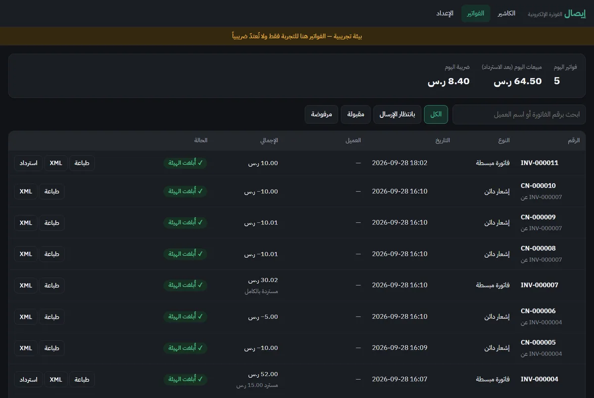
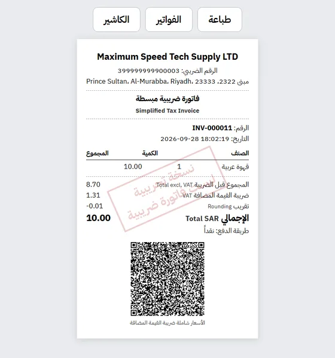
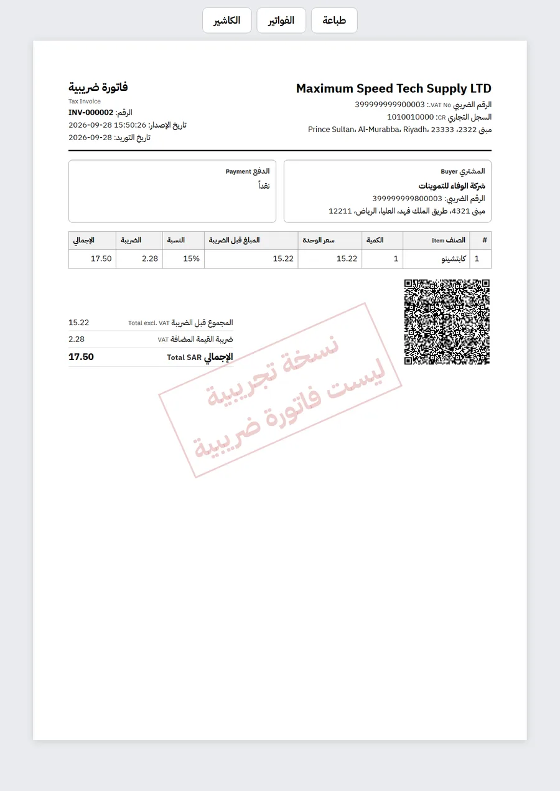

منشأتك مطالبة بالربط مع منصة «فاتورة» قبل ١ فبراير ٢٠٢٧
إيصال يصدر فواتيرك ويبلّغ بها هيئة الزكاة والضريبة والجمارك تلقائياً — من جهازك الحالي وبطابعتك الحالية. نركّبه في محلك، نربطه بالهيئة، وندرّب موظفيك.
إذا تجاوزت إيرادات منشأتك الخاضعة للضريبة ١٨٧٬٥٠٠ ريال في أي سنة من ٢٠٢٢ إلى ٢٠٢٥ ولم تُربط بعد، فهي مشمولة بالموجة الخامسة والعشرين.
للمحلات: كاشير متوافق، بلا أجهزة جديدة
مقهى، حلاق، مغسلة، بقالة، ورشة — أي منشأة لا تملك نظاماً مرتبطاً بالهيئة.
العميل يدفع سعر القائمة بالضبط
١٠ ريالات تبقى ١٠ ريالات شاملة الضريبة — لا هللة زائدة على الفاتورة، والهيئة تقبلها دون تحذيرات.
يعمل حتى لو انقطع الإنترنت
تستمر في البيع، ويرسل الفواتير للهيئة تلقائياً فور عودة الاتصال.
على جهازك وطابعتك
يعمل على جهازك الحالي بنظام ويندوز، ويطبع على طابعة الإيصالات أو طابعة A4.
أرشيف الست سنوات داخل المملكة
نسخة احتياطية يومية، وفحص سلامة الأرشيف، وتصدير للمحاسب بضغطة زر.
استرداد جزئي صحيح
أرجِع صنفاً أو مبلغاً، بإشعار دائن يُبلَّغ للهيئة — دون تعديل الفاتورة الأصلية.
شخص تتواصل معه
نركّب ونربط وندرّب في محلك، ونجدّد شهادة الربط قبل انتهائها — لا نموذج إلكتروني.
مجرَّب على منصة الهيئة، لا على الورق
لقطات من إيصال وهو يعمل على بيئة المطورين لدى الهيئة: اجتياز النماذج الستة، وفواتير مُبلَّغة ومعتمدة.




اللقطات من البيئة التجريبية، لذلك تحمل ختم «نسخة تجريبية». الهيئة لا تعتمد برامج بعينها؛ تفحص كل فاتورة عند وصولها — وفواتير إيصال تجتاز هذا الفحص.
الأسعار
واضحة، بلا رسوم على عدد الفواتير.
يشمل الاشتراك: الدعم، والتحديثات عند تغيّر اشتراطات الهيئة، وتجديد شهادة الربط قبل انتهائها، ومتابعة النسخ الاحتياطي.
عندك برنامج كاشير أو محاسبة؟
اربطه بالمرحلة الثانية دون إعادة بنائه. برنامجك يرسل كل فاتورة لإيصال باستدعاء واحد على الجهاز نفسه، فيعود إليه الرد والـ QR.
- فاتورة مبسطة (إبلاغ) وضريبية (اعتماد)، وإشعارات دائنة ومدينة
- بنود معفاة وصفرية برموز الإعفاء — مقبولة دون تحذيرات
- برقم فاتورتك أنت، وإعادة الإرسال لا تنشئ فاتورة ثانية أبداً
- يرفض الفاتورة إن اختلف إجماليها عمّا رآه عميلك ولو بهللة
- أمثلة جاهزة: C# و PHP و Python و curl
POST http://127.0.0.1:8910/api/documents
{
"number": "POS-1001",
"expected_total": "20.00",
"prices_include_vat": true,
"lines": [
{"name": "Coffee", "qty": 2, "price": "10.00"}
]
}
→ { "status": "reported",
"number": "POS-1001",
"qr": "AR1NYXhpbXVt…" }
كيف نبدأ؟
من أول رسالة إلى أول فاتورة مُبلَّغة.
أسئلة
هل البرنامج معتمد من الهيئة؟
الهيئة لا تعتمد برامج بعينها؛ تفحص كل فاتورة عند وصولها وترفض المخالفة. فواتير إيصال تجتاز هذا الفحص، وقد جرّبنا إرسال فواتير مُخرَّبة عمداً فرفضتها الهيئة بالرمز الصحيح — دليل أن القبول ليس صدفة.
ماذا لو انقطع الإنترنت؟
تستمر في إصدار الفواتير المبسطة، ويرسلها إيصال تلقائياً عند عودة الاتصال (المهلة النظامية ٢٤ ساعة).
ماذا لو تعطّل الجهاز؟
نسخة احتياطية يومية على ذاكرة خارجية؛ جهاز جديد يكمل منها بتسلسل الفواتير نفسه.
هل تأخذون كلمة مرور بوابة «فاتورة»؟
لا. أنت تدخل البوابة وتصدر رمز التحقق بنفسك، ونحن نكتبه في البرنامج فقط.
كم الغرامة إن لم أربط؟
تبدأ الهيئة عادة بإنذار، ثم غرامات تتصاعد عند التكرار. راجع جدول المخالفات الرسمي لدى الهيئة للأرقام الدقيقة.
عندي برنامج كاشير الآن
إن كان مرتبطاً بالمرحلة الثانية فأنت مغطّى. وإن لم يكن، فإما أن يربطه صاحب البرنامج (ونستطيع ربطه له)، أو تنتقل إلى إيصال.